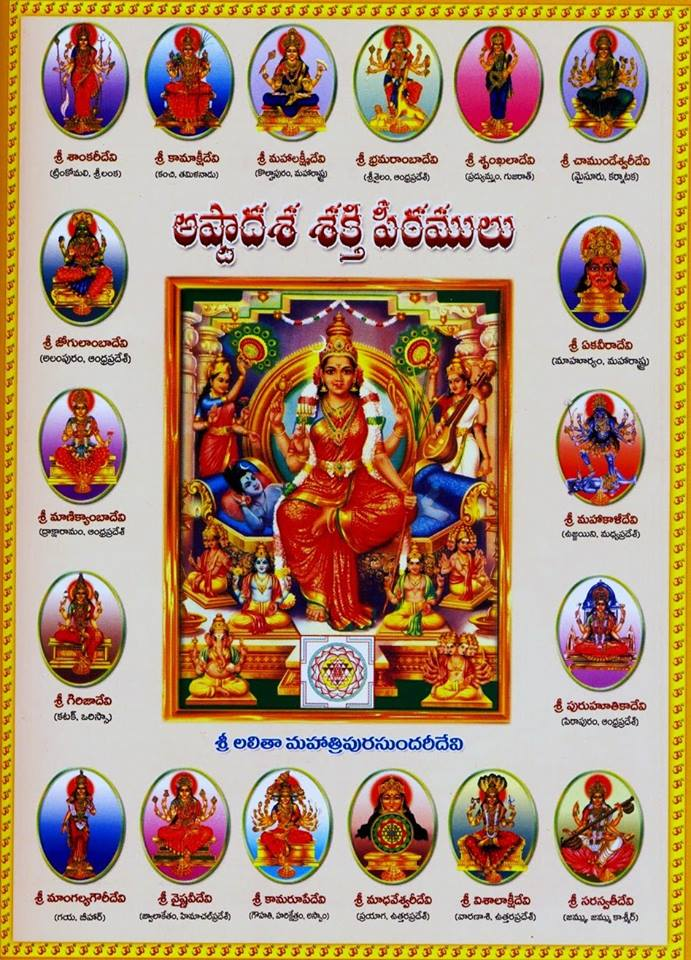
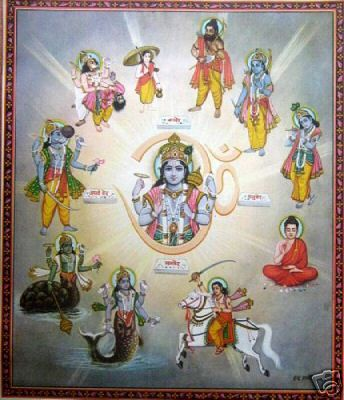

1.Shankari
Devi Temple
2. Kamakshi Amman Temple
3. Shrinkala
4.Chamundeshwari Temple
5.Alampur Jogulamba Temple
6. Mallikarjuna Temple, Srisailam
7. Mahalakshmi Temple, Kolhapur
8.Renuka Temple
9. Mahakaleswar Temple
10. Kukkuteswara Swamy Temple
11. Biraja Temple
12. Draksharama
13. Kamakhya Temple
14. Alopi Devi Mandir
15. Jwalamukhi Temple
16. Mangla Gauri Temple
17.Vishalakshi Temple
18.Vishalakshi Temple
1.Matsya:
The fish avatar.
2.Kurma:The tortoise/turtle avatar.
3.Varaha: The boar avatar.
4. Narasimha:The half-man/half-lion avatar
5.Vamana:The dwarf avatar.
6.Parashurama:The warrior avatar.
7. Rama: The King of Ayodhya.
8. Krishna:King of Dwaraka.
9. Gautama Buddha:The Founder of Buddhism.
10.Kalki:The Final Incarnation of Vishnu.